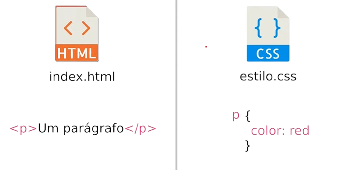
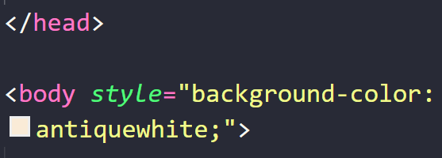
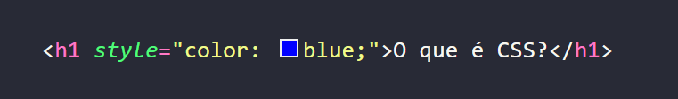
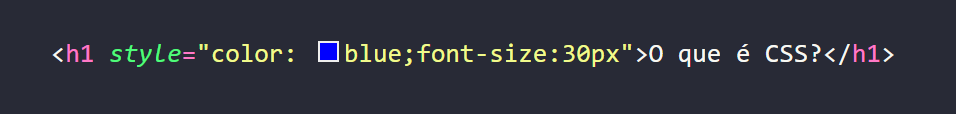

O CSS é o que define um estilo, as cores e
as fontes do nosso site, no geral, o
CSS será responsável por toda parte da estética da nossa página web. Aprender
CSS se torna fundamental para desenvolvermos um site bonito com design chamativo e criarmos
sites
maravilhosos.
A sigla CSS (Cascading Style Sheets) que em português significa (Folha de estilo em
cascata).
O CSS foi desenvolvido no ano de 1996, pelo W3C (World Wide Web
Consortium) com um único propósito. O HTML não foi criado para ter tags que ajudassem a
formatar a página, ou seja, deixá-la visualmente bonita.
Podemos dizer que o CSS é na verdade um complemento para o HTML, embora
na prática, seja considerada uma outra linguagem de marcação.
O CSS, assim como o HTML, ele funciona através de arquivos, no caso,
.CSS.
Por exemplo, imagine que tenhamos criado um arquivo .HTML e, nesse arquivo criamos uma tag
de parágrafo, ou seja, a tag <p>Conteúdo</p>, no arquivo
.CSS vamos nos referir ao parágrafo que queremos editar, que no caso seria o
p, bastar irmos no nosso código .CSS e adicionarmos a seguinte tag:
p{color:red}. Mais para frente do curso vamos ver este exemplo na pratica, por hora, vamos utilizar a
imagens a seguir para auxiliar no entendimento.

É importante conhecermos bem as propriedades do CSS e como cada uma funciona, para termos a
capacidade de estilizar o nosso código HTML da maneira como desejarmos.
Vamos aprender a primeira maneira de colocarmos CSS nos nossos documentos, que é o
CSS em linha, que é quando a gente coloca o CSS dentro do próprio
elemento HTML que estamos trabalhando. Quando a gente trabalha com CSS em linha, sempre
faremos a seguinte forma, vamos selecionar a tag que queremos trabalhar, que no caso será a tag
body que é responsável por todo o corpo do nosso site, vamos colocar o seguinte atributo:
<body style=""> e dentro das aspas dupla iremos vamos passar as propriedades
css e o tipo de
comportamento que ela tenha. Quando colocarmos o style dentro de uma tag html,
estamos determinando que
esse estilo css só irá funcionar para aquela tag, que no caso é a body.
Essa propriedade style dentro da nossa tag <body> serve
para, por exemplo, se quiséssemos alterar a
cor do fundo do nosso site, colocarmos dentro das aspas duplas a propriedade background: e escrevermos a
cor que queremos, por exemplo:

(Obs.: Caso você adicione alguma imagem com o fundo branco e queira mudar a cor do seu site, e possível remover
o
fundo da imagem, acesse o removebg e faça o upload
para remover o fundo da imagem que desejar e, poder alterar o fundo do seu site para a cor que desejar.)
Outro exemplo seria com a tag de titulo do HTML, que seria a <h1></h1>, nos
poderíamos adicionar uma propriedade CSS diretamente aqui nessa minha tag, ficaria da
seguinte forma:

Caso quiséssemos alterar a fonte do nosso titulo sera necessária outra propriedade CSS, esse
atributo seria:

Basicamente é assim que funciona o CSS em linha, isso quer dizer que vamos adicionar os
atributos CSS diretamente nos componentes que queremos que sejam alterados. Porem, nem
sempre ele se torna o modo mais fácil de realizarmos a estilização da nossa página pelo fato de que o atributo
que colocamos iram funcionar somente na tag que selecionamos, ou seja, teríamos que adicionar atributos
CSS em varias e varias tags separadamente.
O CSS é uma peça fundamental no desenvolvimento web, proporcionando estilos e personalização às páginas. Ele pode ser aplicado de diversas formas, como em linha, incorporado ou em arquivos externos, sendo esta última a opção mais recomendada para projetos maiores devido à sua organização e eficiência. Ao dominar o CSS, conseguimos criar sites mais modernos, responsivos e visualmente atrativos. Com a prática, será possível desenvolver layouts sofisticados e aprimorar a experiência do usuário, tornando-se um diferencial para quem busca se destacar no mercado de trabalho e conquistar o primeiro emprego na área de tecnologia.
Para essa nossa aula, iremos criar uma nova página web.
Ir para aula sobre seletores!
Agora vamos aprender mais sobre a estilização dos links em nossas páginas web.
Estilizando links